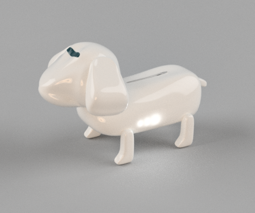

【作成に至るまで】
家にいる時間が長くなる私たち。自然とゴミも増えていく。そこで課題となってくるのは、いかに生活水準を低下させずに家の中で過ごすかという点である。
私が提案するのは、家の中で行う趣味とルーティーンの間の新しい“こと作り”である。
〔趣味とルーティーンの捉え方〕
趣味とは、ある特定の行動を意識的または無意識的に、その行為をやりたいと思ってする行動で、ルーティーンとは“やらなければならない”あるいは“今までやっていたことの習慣化”だと捉える。
今回重要なのは、この２つの間のものである。それは、人が趣味でもルーティーンでもなく“なんとなくやろう”という気持ちで動く行動である。 
言い換えれば、暇なときにする行為そのもの。（例：とりあえずテレビを見よう、なんとなく携帯をいじろう、適当に体を動かそう）
ひとが日々の生活に“つまらなさ”や“充実さ”を感じていないのはこの“なんとなく時間”が満たされていないのが１つの要因ともいえる。
家にいることが多い中、このなんとなく時間はさらに増えていく。それを少しでも充実したものに近づけることが安全で楽しく暮らすためのカギである。
【作品紹介】
作品名：お掃除ロボットマックスくん

機能：自動お掃除モードでは、センサーを駆使して自動で掃除をしてくれる。イメージはルンバ。
お散歩モードでは、頭部のセンサ-が人の動きを認識し、手に持っていたゴミをかざすと近くに来て、ゴミを口から掃除機本体（胴の部分）へと吸収する。

また、首後ろのセンサーによるリモート操作では、飼い主が指示したところを掃除しながら動き、掃除をしているのにまるで散歩しているかのような感覚が味わえる。
ねらい：ルンバのようにただ掃除するだけが目的だけではなく、家の中で散歩をしながら掃除をするという新しいことづくり。家にいる時間が多くなる中で、掃除を楽しくやることもねらい。
こだわり：お掃除ロボットマックスくんは本体を充電することで動くため、専用の充電機は犬小屋風にしたい。。。

みんなからの意見